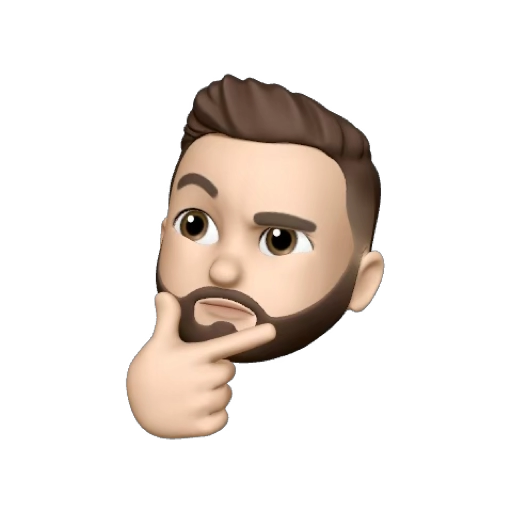

JUAN
INFANTE.

Empecé estudiando Comunicación Social. Pero me di cuenta rápido que prefería estar detrás de la cámara que frente a ella. Así que cambié de camino.
Empecé desde abajo. Literalmente recogiendo cables en un set en Bogotá durante la pandemia. Desde ahí no paré. Pasé años editando, produciendo y construyendo marcas de forma independiente. Restaurantes, licoreras, marcas de tecnología, eventos, artistas. Aprendiendo en el campo, cag#@ndola, no en la teoría. No conozco el primer colega al que no se le haya borrado una memoria, olvidado prender el micrófono, dado record sin querer o quitado las marcas del suelo por error. Porque cag#@ndola uno aprende. Haciendo las cosas siempre perfectas, no tanto.
En 2025 entré de practicante a una empresa de tecnología. En menos de 3 meses me pusieron a liderar diseño y marketing porque nadie más había podido ordenar esas dos áreas. Evaluación 5/5. Sin aspectos a mejorar (hasta el momento, después sí seguí cag#@ndola) según mi jefe.
Qué ironía. Años enteros detrás de la cámara y hoy en 2026 sigo detrás de ella, pero también vuelvo a estar frente a ella. Porque el que no hace contenido todavía vive en el 2000.

HOY EN DÍA LLEVO AÑOS CONTANDO HISTORIAS DE OTRAS MARCAS. ESTA ES LA MÍA.
TECNO
SUPER
LA ISLA
CARNICOS
TORROS
FRAME
FLOW
MEDIA
COOKIES
MEDIA
adquirida por Vice Media
Herramientas